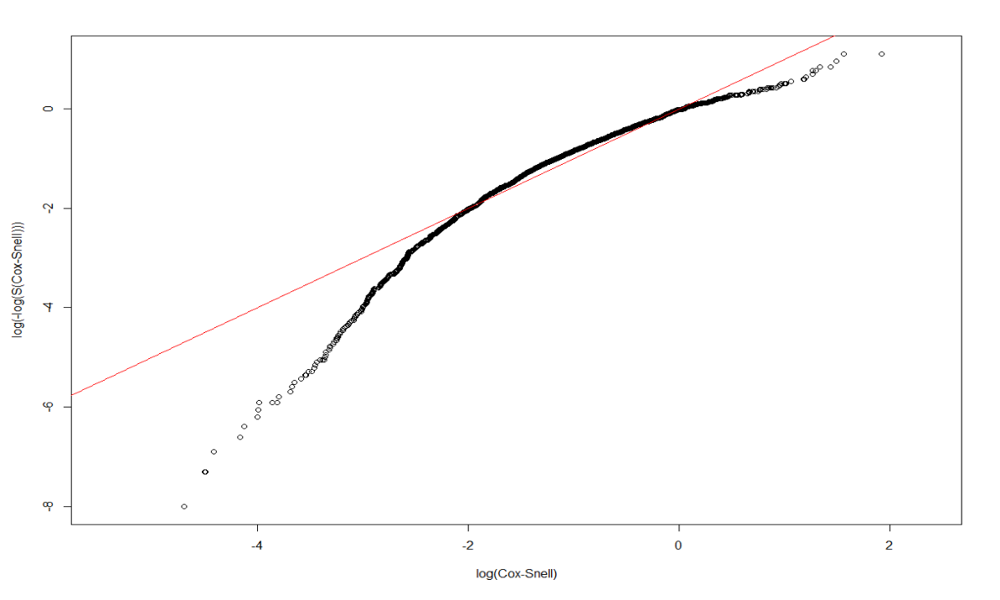

3.4 Parametric Models
Another point that we are going to explore is if we would be able to fit our data to a parametric model. This matters since if we could fit any parametric model, then we should have a model good enough to generate predictions of breast cancer patients’ survival and would have nice and interpretable coefficients to work with.
To do so, we will begin by checking if any of Exponential, Weibull, or Log-normal distribution would be adequate parametric assumption to cast on our data. We will verify the adequacy by checking the Cox-Snell residual plot. We will be fitting models using variables: Treatment, size, nodes, grade, age (we have shown in Chapter 2 that age is a confounder for categories in Treatment).
3.4.1 User-defined Cox-Snell function
If we fit Exponential model on the survival time, we have the function \(S(t) = e^{-\lambda t}\), and we can transform the survival function into an expression for the “complementary log-log”:
\[\begin{align*} S(t) &= e^{-\lambda t} \\ \log[S(t)] &= -\lambda t \\ -\log[S(t)] &= \lambda t \\ \log\big(-\log[S(t)] \big) &= \log\lambda + \log t \end{align*}\]
Then, if we let \(y=\log\big(-\log[S(t)] \big)\), \(m=1\), \(b=\log(\lambda)\), and \(x=\log(t)\), then we can view the equation in the form \(y=mx+b = 1*x+b\).
This means that if Exponential model is adequate, its complementary log-log plot should be a linear line with slope=1 and intercept=0.
And for any other parametric model, we can define a Cox-Snell residual as \(CS_i = -log(\hat{S}_p(t_i|x_i))\) for \(i=1,\dots, n\), and \(CS_i\)s should behave like data drawn from an Exponential distribution (\(\lambda=1\)).
Thus, we can check the adequacy of any model by checking the Exponential-ness of its Cox-Snell residuals. We can graph \(CS_i\) vs \(log(CS_i)\), and the graph should also look linear with slope =1 and intercept=0, if the parametric model is adequate for the data.
# The Cox-Snell function takes as inputs
# 1. A vector of Cox-Snell residuals created by the user based on the model being evaluated,
# 2. A status vector
# 3. Optional x- and y- limits for the resulting plot
CoxSnell = function(cs,status,xlim=NULL,ylim=NULL)
{
kmcs = survfit(Surv(jitter(cs,amount=(max(cs)-min(cs))/1000),status) ~ 1)$surv
plot(log(-log(kmcs)) ~ sort(log(cs)) ,
xlab="log(Cox-Snell)", ylab="log(-log(S(Cox-Snell)))", xlim=xlim, ylim=ylim )
abline(0,1,col='red')
}3.4.2 Exponential and Weibull
We first tried to examine the adquacy of Exponential and Weibull model, but none of them are adquate for our dataset:
dtime, death ~ Treatment + size + nodes + grade + ageunder Exponential:
Dexp <- survreg(Surv(dtime, death) ~ Treatment + size + nodes + grade + age, dist='exponential', data=rotterdam)
Dexp## Call:
## survreg(formula = Surv(dtime, death) ~ Treatment + size + nodes +
## grade + age, data = rotterdam, dist = "exponential")
##
## Coefficients:
## (Intercept) TreatmentChemo
## 10.72043480 -0.51333347
## TreatmentHormon TreatmentNaN/Other Treatment
## -0.41382108 -0.45674929
## size20-50 size>50
## -0.44229181 -0.76874022
## nodes grade3
## -0.06922296 -0.32925464
## age
## -0.01424763
##
## Scale fixed at 1
##
## Loglik(model)= -12125.2 Loglik(intercept only)= -12360.4
## Chisq= 470.37 on 8 degrees of freedom, p= <2e-16
## n= 2982rtime, recur ~ Treatment + size + nodes + grade + ageunder Exponential:
Rexp <- survreg(Surv(rtime, recur) ~ Treatment + size + nodes + grade + age, dist='exponential', data=rotterdam)
Rexp## Call:
## survreg(formula = Surv(rtime, recur) ~ Treatment + size + nodes +
## grade + age, data = rotterdam, dist = "exponential")
##
## Coefficients:
## (Intercept) TreatmentChemo
## 9.081159515 -0.373811470
## TreatmentHormon TreatmentNaN/Other Treatment
## -0.507332960 -0.485387357
## size20-50 size>50
## -0.372059978 -0.654240460
## nodes grade3
## -0.080821343 -0.393920415
## age
## 0.008095379
##
## Scale fixed at 1
##
## Loglik(model)= -13897.4 Loglik(intercept only)= -14153.7
## Chisq= 512.6 on 8 degrees of freedom, p= <2e-16
## n= 2982
dtime, death ~ Treatment + size + nodes + grade + ageunder Weibull:
Dweibull <- survreg(Surv(dtime, death) ~ Treatment + size + nodes + grade + age, dist='weibull', data=rotterdam)
Dweibull## Call:
## survreg(formula = Surv(dtime, death) ~ Treatment + size + nodes +
## grade + age, data = rotterdam, dist = "weibull")
##
## Coefficients:
## (Intercept) TreatmentChemo
## 10.10735484 -0.39504003
## TreatmentHormon TreatmentNaN/Other Treatment
## -0.37941684 -0.35423500
## size20-50 size>50
## -0.33487166 -0.61672126
## nodes grade3
## -0.05500626 -0.26093659
## age
## -0.01130402
##
## Scale= 0.7370449
##
## Loglik(model)= -12055.3 Loglik(intercept only)= -12322.7
## Chisq= 534.68 on 8 degrees of freedom, p= <2e-16
## n= 2982rtime, recur ~ Treatment + size + nodes + grade + ageunder Weibull:
Rweibull <- survreg(Surv(rtime, recur) ~ Treatment + size + nodes + grade + age, dist='weibull', data=rotterdam)
Rweibull## Call:
## survreg(formula = Surv(rtime, recur) ~ Treatment + size + nodes +
## grade + age, data = rotterdam, dist = "weibull")
##
## Coefficients:
## (Intercept) TreatmentChemo
## 9.092880859 -0.376425745
## TreatmentHormon TreatmentNaN/Other Treatment
## -0.508855839 -0.489527042
## size20-50 size>50
## -0.376473401 -0.659532060
## nodes grade3
## -0.081625087 -0.398251643
## age
## 0.008216064
##
## Scale= 1.014145
##
## Loglik(model)= -13897.2 Loglik(intercept only)= -14145.7
## Chisq= 497.1 on 8 degrees of freedom, p= <2e-16
## n= 2982
3.4.3 Log-normal models
Finally, we will examine the adequacy of Log-normal model.
Dlnorm <- survreg(Surv(dtime, death) ~ Treatment + size + nodes + grade + age , dist='lognormal', data=rotterdam)
summary(Dlnorm)##
## Call:
## survreg(formula = Surv(dtime, death) ~ Treatment + size + nodes +
## grade + age, data = rotterdam, dist = "lognormal")
## Value Std. Error z p
## (Intercept) 9.91513 0.27975 35.44 < 2e-16
## TreatmentChemo -0.42503 0.26292 -1.62 0.106
## TreatmentHormon -0.31448 0.26896 -1.17 0.242
## TreatmentNaN/Other Treatment -0.41617 0.26011 -1.60 0.110
## size20-50 -0.34787 0.05108 -6.81 9.8e-12
## size>50 -0.60916 0.08067 -7.55 4.3e-14
## nodes -0.07773 0.00544 -14.29 < 2e-16
## grade3 -0.30866 0.05490 -5.62 1.9e-08
## age -0.01005 0.00197 -5.10 3.3e-07
## Log(scale) 0.06670 0.02162 3.08 0.002
##
## Scale= 1.07
##
## Log Normal distribution
## Loglik(model)= -12018.2 Loglik(intercept only)= -12286.5
## Chisq= 536.66 on 8 degrees of freedom, p= 9.5e-111
## Number of Newton-Raphson Iterations: 4
## n= 2982CS_LnormD <- -log(1 - plnorm(rotterdam$dtime, 9.91512622-0.42502769*(rotterdam$Treatment=="Chemo")
-0.31448004*(rotterdam$Treatment=="Hormon")
-0.41616843*(rotterdam$Treatment=="NaN/Other Treatment")
-0.34787441*(rotterdam$size=="20-50")
-0.60916461*(rotterdam$size==">50")
-0.07772719*rotterdam$nodes
-0.30866307*(rotterdam$grade=="3")
-0.01004650*rotterdam$age,
1.06897))
# Make appropriate graph using CoxSnell function
CoxSnell(CS_LnormD, rotterdam$death)Rlnorm <- survreg(Surv(rtime, recur) ~ Treatment + size + nodes + grade + age, dist='lognormal', data=rotterdam)
summary(Rlnorm)##
## Call:
## survreg(formula = Surv(rtime, recur) ~ Treatment + size + nodes +
## grade + age, data = rotterdam, dist = "lognormal")
## Value Std. Error z p
## (Intercept) 8.78912 0.30877 28.46 < 2e-16
## TreatmentChemo -0.36139 0.29098 -1.24 0.21425
## TreatmentHormon -0.41809 0.29943 -1.40 0.16263
## TreatmentNaN/Other Treatment -0.58078 0.28741 -2.02 0.04331
## size20-50 -0.41866 0.05992 -6.99 2.8e-12
## size>50 -0.67179 0.09845 -6.82 8.9e-12
## nodes -0.10590 0.00662 -16.00 < 2e-16
## grade3 -0.43987 0.06470 -6.80 1.1e-11
## age 0.00892 0.00238 3.75 0.00018
## Log(scale) 0.28360 0.01980 14.33 < 2e-16
##
## Scale= 1.33
##
## Log Normal distribution
## Loglik(model)= -13780.4 Loglik(intercept only)= -14045.8
## Chisq= 530.65 on 8 degrees of freedom, p= 1.9e-109
## Number of Newton-Raphson Iterations: 4
## n= 2982CS_LnormR <- -log(1 - plnorm(rotterdam$rtime, 8.78912009-0.36138607*(rotterdam$Treatment=="Chemo")
-0.41809135*(rotterdam$Treatment=="Hormon")
-0.58077716*(rotterdam$Treatment=="NaN/Other Treatment")
-0.41865655*(rotterdam$size=="20-50")
-0.67178824*(rotterdam$size==">50")
-0.10590430*rotterdam$nodes
-0.43987388*(rotterdam$grade=="3")
+0.00892277*rotterdam$age,
1.327904))
# Make appropriate graph using CoxSnell function
CoxSnell(CS_LnormR, rotterdam$recur)
We could see that the Log-normal parametric model is an adequate model for both the dtime and rtime vs. Treatment + size + nodes + grade + age.
3.4.3.1 Interpretation of the coefficients
Lognormal is an example of a class of models called Accelerated Failure Time (AFT) models, in which every 1-unit increase in \(x_i\) is associated with a scaling of time by \(e^{c_i}\), where \(c\) is the coefficient of \(x\) in the regression model. The quantity \(e^{c_i}\) is referred to as a time ratio (TR), and thus each \(c_i\) represents a log(TR).
Thus, the results of our lognormal model can be interpreted in the following way:
3.4.3.1.1 For dtime:
## [1] 0.6537517## [1] 0.7301685## [1] 0.6595692## [1] 0.7061876## [1] 0.543805## [1] 0.9252168## [1] 0.7344282## [1] 0.9900038Having chemotherapy, hormon-therapy and NaN/Other Treatment is associated with a scaling of mean survival time by 0.6537517, 0.7301685 and 0.6595692 respectively, compared to having both chemo and hormon therapies. However, the relationships are all insignificant.
Compared to tumor size <=20mm, having tumor size 20-50mm and >50mm will make the expected survival time scaled by 0.7061876 and 0.543805.
For node and age, each extra positive lymph nodes and every 1-year increase in age is associated with a scaling of mean survival time by 0.9252168 and 0.9900038.
And compared to grade II, grade III of cancer cell makes the expected survival time multiplied by 0.7344282.
3.4.3.1.2 For rtime:
## [1] 0.69671## [1] 0.6583021## [1] 0.5594634## [1] 0.6579301## [1] 0.5107943## [1] 0.8995107## [1] 0.6441177## [1] 1.008963Having chemotherapy, hormon-therapy and NaN/Other Treatment is associated with a scaling of mean time till recurrence by 0.69671, 0.6583021 and 0.5594634 respectively, compared to having both chemo and hormon therapies. And the relations here are also insignificant.
Compared to tumor size <=20mm, having tumor size 20-50mm and >50mm will make the expected survival time scaled by 0.6579301 and 0.5107943.
For node and age, each extra positive lymph nodes and every 1-year increase in age is associated with a scaling of mean survival time by 0.8995107 and 1.008963.
And compared to grade II, grade III of cancer cell makes the expected survival time multiplied by 0.6441177.
3.4.3.2 Why log-normal
As to why the Log-normal model would be suitable for the data, we are not sure. One thing to consider is that the non-monotonicity of the hazard function, which is one main characteristic of log-normal model compared to Exponential and Weibull.
The plot below graphs the general hazard functions of our dtime and rtime in a non-parametric way, and we can find that both of them shows non-monotonicity. Though we cannot graph the exact hazard functions conditioning on the diagnostic and treatment information, the non-parametric hazard can still partially explain the adquacy of log-normal.

3.4.3.3 Positive coefficient of age
In the rtime ~ Treatment + size + nodes + age models, it is surprised to see that the coefficient of age is positive, though the value is small. One possible explanation could be the idea of “competing events” and “competing risk”.
In this scenario, having recurred breast cancer and being dead could be somewhat “competing events”. Though they are not completely “cannot happen on one person at the same time”, it is still reasonable to think that for older patients, it is more likely to die from breast cancer or other complications than being cancer-free for years and then having breast cancer recurred; whereas for younger people, the risk of having recurrent breast cancer could be higher than being dead from the first breast cancer.
rotterdam_new <- rotterdam %>%
mutate(state = ifelse(death == 1 & recur == 0, "death",
ifelse(death == 0 & recur == 1, "recur",
ifelse(death == 1 & recur == 1, "both", "neither"))))
ggplot(rotterdam_new, aes(x=age, color=state, fill=state)) +
geom_density(alpha=0.3)
The plot above also helps verifying the idea. We can find that the group who has been dead during the study but has never had breast cancer recurred (the green one) tends to be older than others.
The positive coefficient of age in the log-normal model may seem indicating a protective effect of being old against having breast cancer recurred, but this should not be the true case. It is very likely that this is caused by the competing risk between being dead and having breast cancer recurred for people in different age group. The elderly patients are less likely to suffer from recurrent breast cancer because they are more likely to die from breast cancer or other complications during the treatment after the first diagnosis.